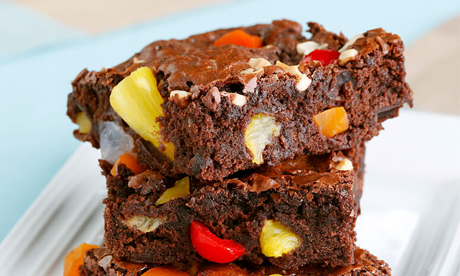

Brownies

A fruity treat in your favorite chocolate brownies!
Preparation Time: 10 mins.
Cooking Time: 1 hr and 45 mins.
Total Time: 15 mins.
Ingredients
- butter oil, for greasing
- 1/2 cup butter, softened
- 2 pc egg
- 1 pack chocolate fudge brownie mix (500g)
- 1 can DEL MONTE Fiesta Fruit Cocktail (432g), drained
- 1/4 cup nuts, roasted (optional)
Instructions
- If using an oven: Preheat oven at 350°F. Grease two 9 1/2-inch x 5 1/2-inch pan with butter or oil. If using an oven toaster: Grease two 9 1/2-inch x 5 1/2-inch pan with butter or oil.
- Using a wooden spoon, whip the butter until creamy. Add eggs and brownie mix. Mix until well blended. Batter will be heavy.
- Stir in DEL MONTE Fiesta Fruit Cocktail. Spread batter on the prepared pan. Top with nuts if desired.
- If using an oven: Bake in the oven at 350°F for 40-45 minutes. Turn off heat and let it stand in the oven for 5 minutes. If using an oven toaster: Cover with three layers of aluminium foil. Bake in the oven at 350°F for 40-45 minutes. Turn off heat and let it stand in the oven for 5 minutes.
- If using an oven: Cool on rack. Slice and serve. If using an oven toaster: Remove cover, cool on rack. Slice and serve.